Do you need a full-frame body and pro lenses, plus a long trip, to take good photos? You only need creative ideas and a few tricks. Entry-level gear that costs 5,000 yuan can also make photos that make people say wow. Do not believe it? Today we use a Canon EOS R100, an RF-S55-210mm F5-7.1 IS STM lens, and a few small props. We will show you the steps and tricks for several macro shoots. It is full of tips and friendly to beginners. You will learn it by the end. All sample shots below were taken with the Canon EOS R100 and the RF-S55-210mm F5-7.1 IS STM.
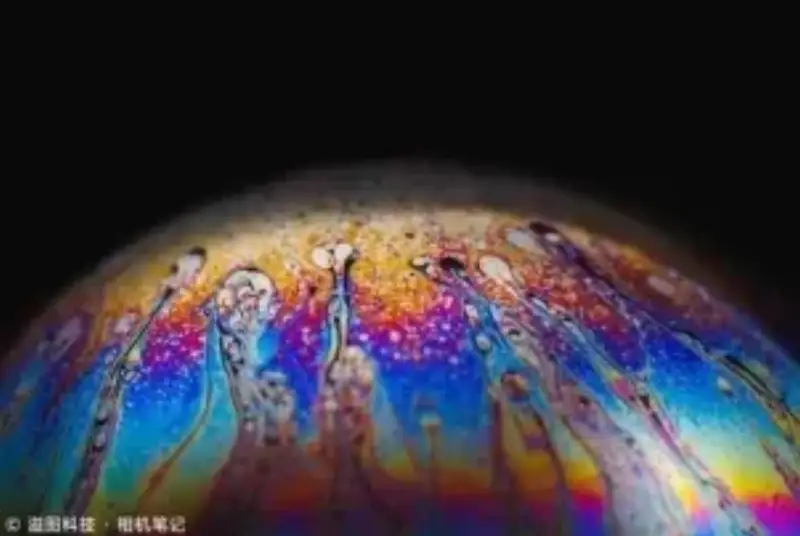
▲ 183mm | F13 | 1/160s | ISO-400
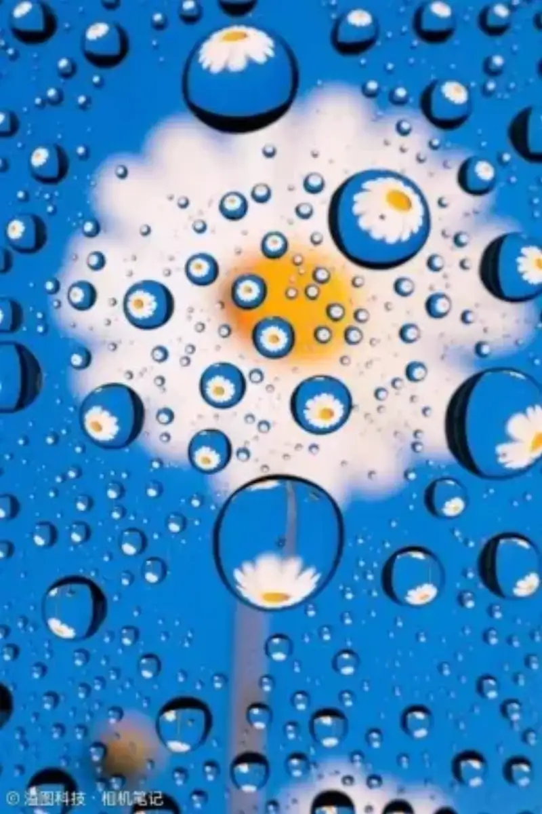
▲ 77mm | F10 | 1/6s | ISO-400
▲ 55mm | F9 | 1/250s | ISO-400

▲59mm | F14 | 1/2000s | ISO-1000
Scene 1: Bubble planets
One bubble looks like a planet. Shoot a soap bubble up close, and it becomes a sci-fi image that looks like an alien body. The colors are bright, and the texture is rich. The image feels like a world from science fiction.
▲ 91mm | F14 | 1/125s | ISO-400
Prepare the props:
- Mix water, dish soap, honey, and glycerin to make bubble solution.
- Pour the bubble solution into a bottle cap, and blow bubbles with a straw. - If the bubbles break easily while you blow, add a little more honey to the mix. - Shoot in sunlight. Use white paper to make a simple softbox. Use a black box or another dark object as the background.


Shooting tips:
Use manual exposure. The bubble solution keeps moving, so set the shutter speed to 1/100 second or faster. Stop the aperture down to around F13, so enough of the shot is in focus. Adjust the ISO to the brightness of the scene, so the exposure is enough.
On the EOS R100 and all mirrorless cameras, stopping the aperture down to gain depth of field is basic. A phone cannot do this easily. Most phones have no iris diaphragm. The few that do put it on the wide camera, not the telephoto camera. If you cannot gain depth of field by stopping the aperture down, you must use focus bracketing and stack the shots. That makes the shoot much more complex.
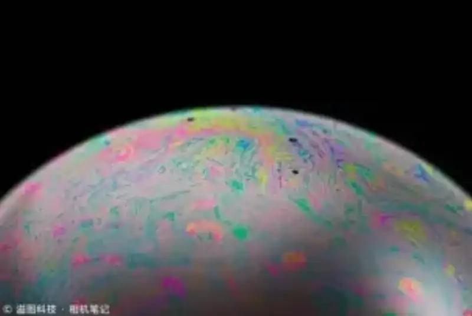
▲ 135mm | F13 | 1/100s | ISO-250
Scene 2: The world inside a water drop
Countless small drops act like tiny convex lenses. They refract the yellow sunflower and the blue sky. One sunflower fills the screen with sun-like blooms. Soft focus and sharp focus, warmth and rain, all blend together.
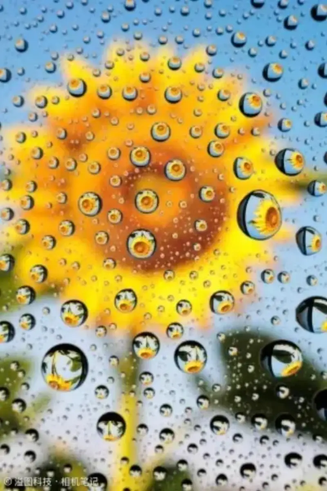
▲ 72mm | F10 | 1/10s | ISO-400
Prepare the props:
- Open a nice photo on a phone or tablet, such as a flower or a butterfly.
- Prop a tempered glass screen protector above the phone or tablet. Leave about 10 cm of gap.
- Spray water on the glass. Use a straw to gather the small drops at the center into one larger drop.
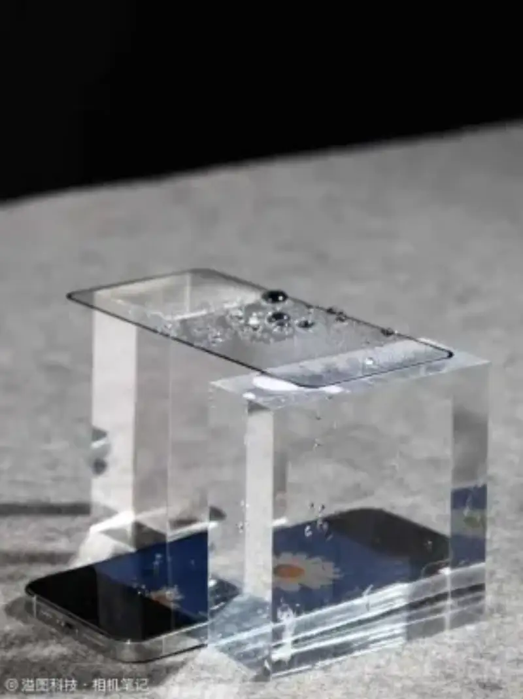
Shooting tips:
The drops are still, so use a tripod. You can lower the shutter speed and the ISO. To avoid shake from pressing the shutter or reviewing shots, use Camera Connect to control the camera remotely. You can also touch to focus and zoom into part of the frame.
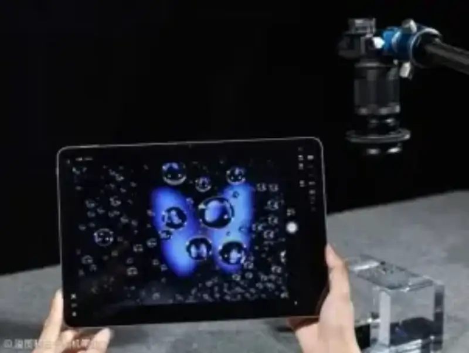
▲ Shoot from a fixed tripod
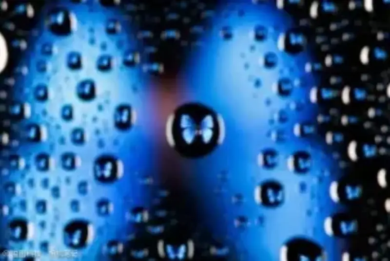
▲ 140mm | F10 | 1/6s | ISO-400
Scene 3: Miniature world
Place tiny miniature figures in a set made of everyday objects. Build a small adventure world full of imagination.
▲ 116mm | F9 | 1/250s | ISO-400
Prepare the props:
- Miniature figures in an outdoor-adventure style, broccoli, an instant coffee can, and coffee beans. - When you shoot outdoors, use the facilities near your neighborhood, such as a wooden deck, a bench, or grass.
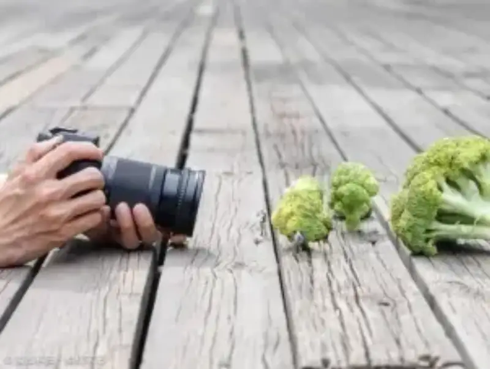
Shooting tips:
Miniature photography is mostly about creative set design and light control. For example, use black card to control the light. Watch the area that is in focus. Do not let the depth of field get too shallow.
When you shoot outdoors in bright light, use the EVF electronic viewfinder. It helps you frame and shoot better.
▲ 55mm | F13 | 1/100s | ISO-400
Scene 4: Water-drop crown
A drop falls from above and hits the water. It makes either a crown-shaped splash or an exclamation-mark-shaped splash. Freeze that instant with the shutter, and you get a dreamy image.
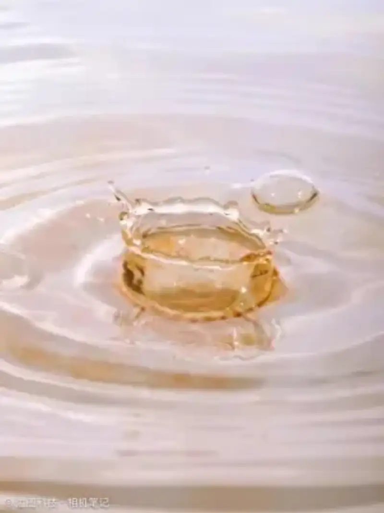
▲ 59mm | F18 | 1/200s | ISO-1000
Prepare the props:
- Use a clear container with a wide opening, and add water until it reaches the rim. - Place a syringe or dropper for dripping water directly above the container. For a better result, mix in colored liquids such as strong tea or coffee.
- Use a straw to mark where the drop falls, and adjust the focus to that point.

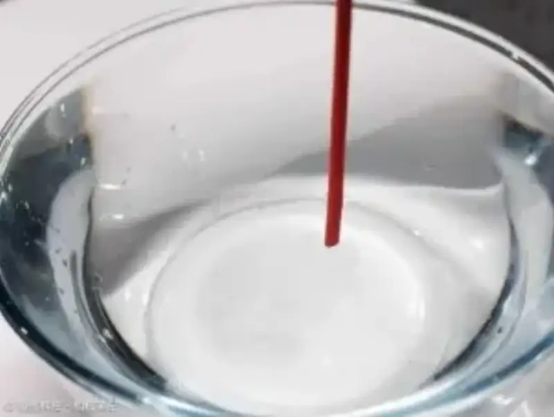
▲ Use a straw to mark the drop position
Shooting tips:
The earlier scenes used only natural light or continuous lights. The water-drop crown needs one or two external flashes for the best result. The shutter speed does not need to be high, and the flash does not need TTL or high-speed sync. Keep the room free of other bright lights. Then the exposure time equals the flash duration. At less than full power, a flash lasts only a few thousandths of a second. The Canon EOS R100 keeps the standard contacts, so it can trigger many kinds of flashes and studio lights. It lowers the barrier to flash photography.
▲ 59mm | F14 | 1/200s | ISO-1000
Why choose this gear?
The EOS R100 came out in May 2023. It is the entry model in Canon's EOS R mirrorless system. The kit with the RF-S18-45mm F4.5-6.3 IS STM lens now costs about 2,599 yuan. If the EOS R100 can make this shoot, I believe you can achieve a similar result too.
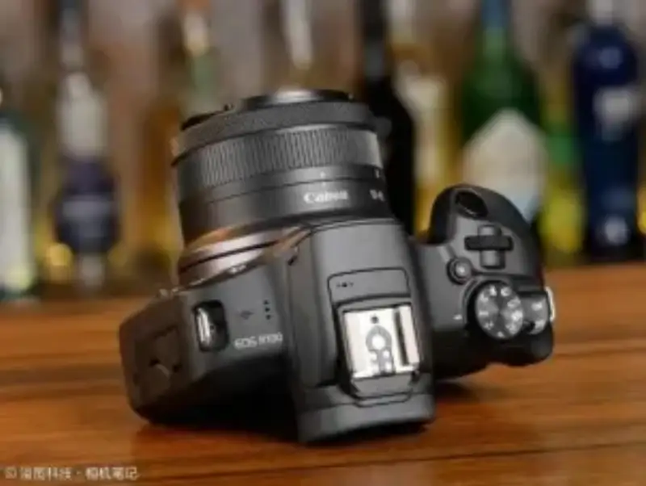
At the 2,500-yuan price point, the Canon EOS R100 has an APS-C CMOS sensor of about 24.1 megapixels. That is a large sensor for the price. It has full Av aperture-priority, Tv shutter-priority, and M manual modes. It also supports generic flash triggering and wired and wireless remote control. These let your ideas become real.
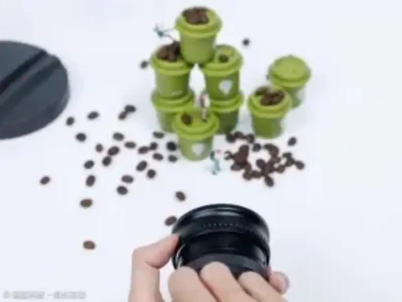
Because we shoot some macro photos, I need to explain the idea of magnification ratio.
The magnification ratio is the size of the image that the lens forms on the sensor, compared with the real object. A higher ratio means the image is larger. The camera and lens can focus closer.
▲ Canon's official page for the RF100mm F2.8 L MACRO IS USM
That definition is a bit abstract. Put another way, a higher ratio lets a smaller object fill the frame. The Canon EOS R100 sensor is 22.3 mm by 14.9 mm. At a 1:1 ratio, an object the size of the sensor fills the whole frame. At a 1:5 ratio (0.2x), an object up to five times the sensor size, about 111.5 mm by 74.5 mm, fills the whole frame.
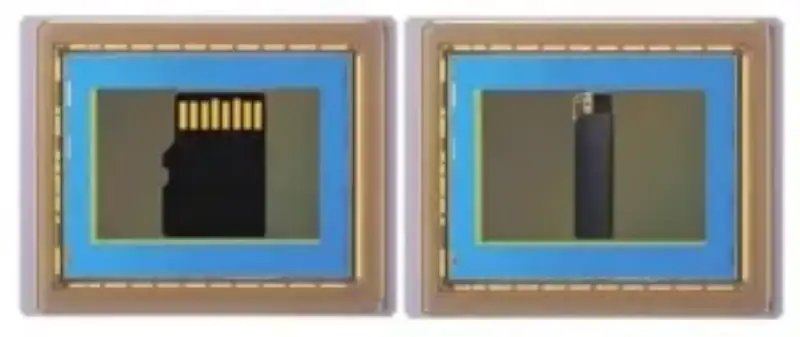
▲ On a Canon APS-C sensor, a 1:1 lens fills the frame height with a microSD card (11 mm by 15 mm). A 1:5 lens fills the whole frame with a lighter (about 7.5 cm).
So how do we raise the magnification ratio? The simplest way is to buy a macro lens. Canon's RF system now has three affordable macro lenses: the RF24mm F1.8 MACRO IS STM, the RF35mm F1.8 MACRO IS STM, and the RF85mm F2 MACRO IS STM. Each has a 0.5x ratio. There is also the professional red-ring RF100mm F2.8 L MACRO IS USM, with a 1.4x ratio.
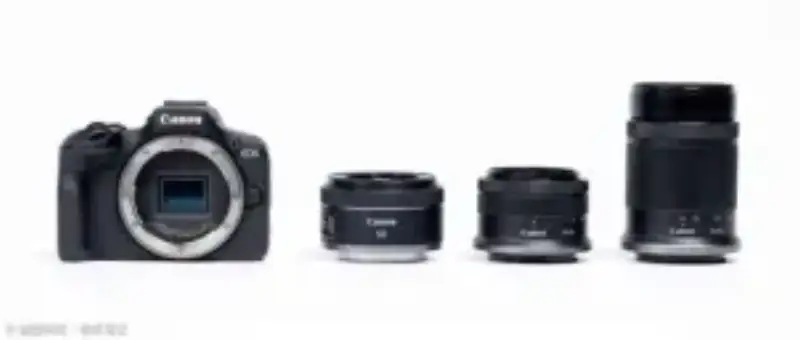
But even an affordable macro lens costs over 3,000 yuan new, not used. If you do not shoot macro or still life often, that is a lot to spend.
So this time we use a close-up filter on a normal lens. A close-up filter greatly improves close-focus ability, and costs less than a tenth of a macro lens. The image quality is not as good as a pro macro lens, but it is enough for creative shots.
I happen to have a 67 mm close-up filter that I bought years ago for an EF-S 18-135mm F3.5-5.6 IS USM. The used price is now only about a hundred-plus yuan.
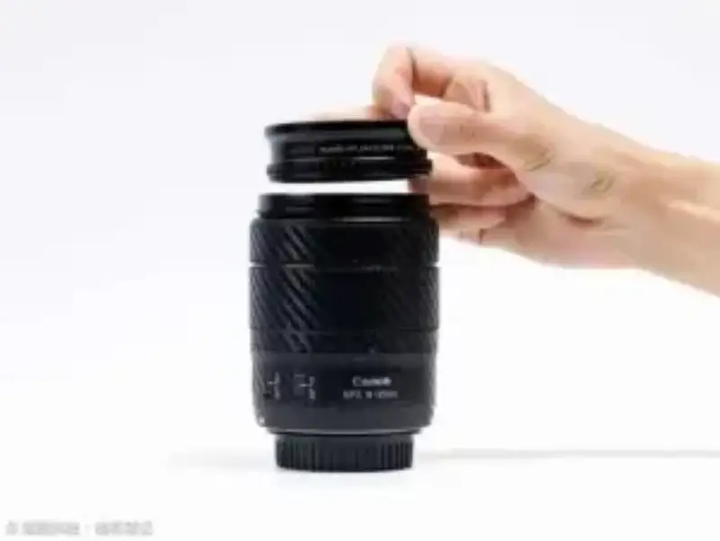
We tested close-up ability before and after adding the filter on the three lenses that APS-C EOS R users use most: the RF-S18-45mm F4.5-6.3 IS STM, the RF-S55-210mm F5-7.1 IS STM, and the RF50mm F1.8 STM.
We balanced close-up ability, image quality, and perspective. In the end, we used the RF-S55-210mm F5-7.1 IS STM with the close-up filter for all the shots above.

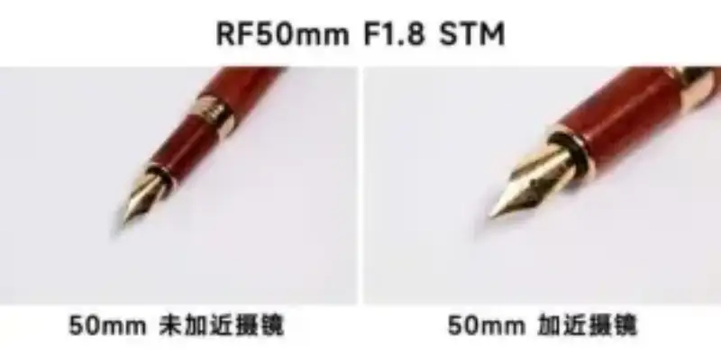
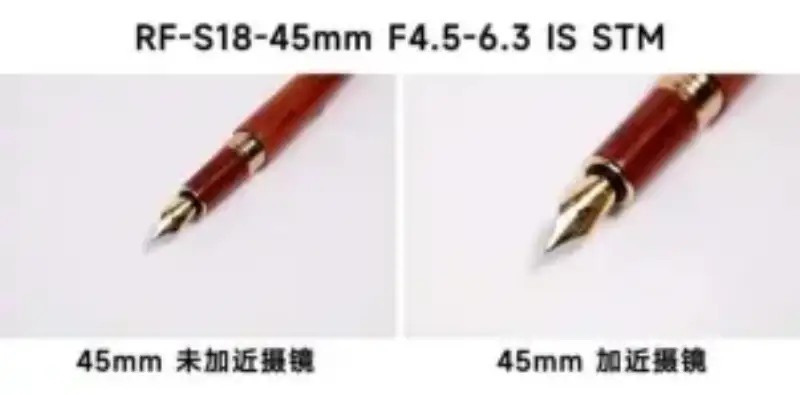
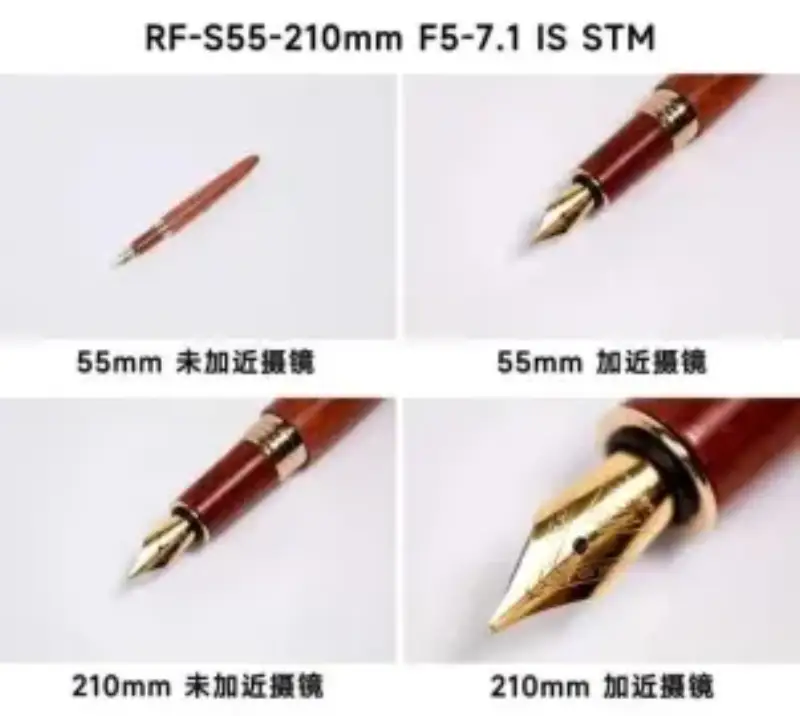
Compared with adapting a manual macro lens, the native RF-S telephoto plus a close-up filter keeps autofocus and image stabilization. Most important, it also works for everyday subjects. For most people, that puts the budget where it matters.
The Canon EOS R100, two lenses, and the close-up filter cost under 5,000 yuan in total. Only the last water-drop crown needs a flash. The other scenes only need small props that cost a few dozen yuan.
What are you waiting for? Follow our tutorial and get started.
Disclaimer: The market carries risk, and choose with care. This article is for reference only, and is not a basis to buy or sell.